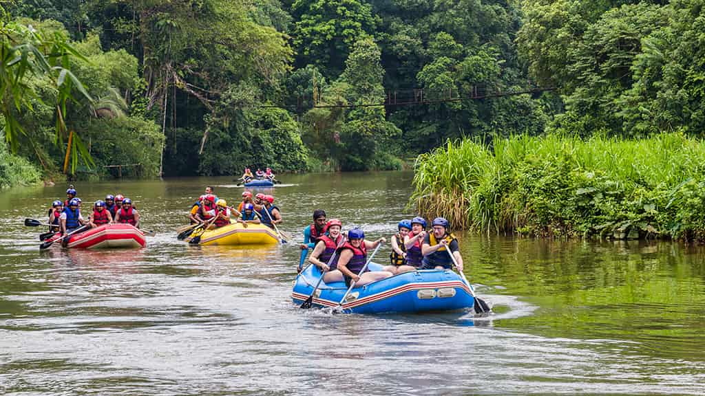

Our purpose is to deliver unforgettable whitewater rafting experiences that connect people with nature and adventure. Our mission is to provide safe, expertly guided river journeys that inspire confidence, excitement, and lasting memories for individuals and groups. We believe in a creed of safety first, environmental responsibility, teamwork, and exceptional customer experience. Our motto: “Ride the Rapids. Embrace the Adventure.”